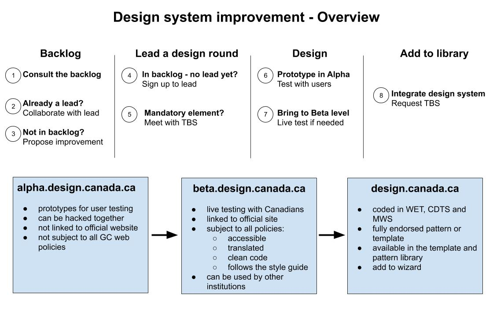

Canada.ca design system improvement process
*****This is a draft of the processs - still a work in progress *****
On this page
- Overall process
- Improvement backlog
- Participate in a design round
- Design and test the new or updated pattern
- Add to template and pattern library
Government of Canada institutions subject to the Directive on the Management of Communications must apply the Canada.ca design system. This design system contains mandatory elements and recommended elements. Using the Canada.ca design system enables institutions to create user-focused content while maintaining a consistent trusted digital brand for the Government of Canada web presence.
The web is evolving rapidly. The Canada.ca design system must be able to improve quickly, using these principles:
- task-focused
- user-centered
- evidence-based
- flexible
- agile
This framework allows institutions to collaborate to improve the Canada.ca design system.
Overall process
Using this process, institutions can collaborate on improving existing design patterns and introducing new ones to help solve design issues for the whole GC Web community. It creates a space for experimentation, innovation and flexibility, while maintaining a sense of unity to help strengthen the GC trusted digital brand.
*** Need long description***
Improvement backlog
TBS maintains 2 lists of improvements to make the Canada.ca design system:
- Backlog of improvements to the pattern and template library
- Backlog of minor improvements and corrections
This process concerns the improvement to existing patterns and template and the introduction of new ones.
If you have minor improvements or corrections to make, send us an email at dto.btn@tbs-sct.gc.ca.
Consult the backlog
While designing content for Canadians or while testing your current design, you may determine that either:
- an existing pattern or template needs to be improved
- new pattern or template is needed to fill a gap in the design system
Before suggesting an improvement, consult the backlog to determine if it has already been identified.
If your suggestion is not the backlog
If the pattern or template you identified for improvement is not in the backlog, submit a proposal to us at dto.btn@tbs-sct.gc.ca.
The proposal must include:
- the name of the pattern or template that needs to be improved
- the issue you want to solve or the gap you identified
- any quantitative or qualitative data you have to substantiate the issue
In order for a suggestion to make its way in the backlog, there needs to be a documented issue to solve. It needs to address a real need to help institutions design web content that will help Canadians complete their tasks and institution fulfill their mandate.
We will review suggestions on a case-by-case basis and update the backlog accordingly.
You can suggest an improvement even if you can’t commit to work on it, and that you don’t need to already have a designed solution. The first step is to document the gaps in the design system.
Participate in a design round
A design round to propose an improvement to the pattern library can be led by any department.
Before participating in a design round, verify if there's already an institution leading a design round.
If there are no design lead yet
To lead a design round, you need to commit to the following:
- test your prototype with users to determine if the design addresses the issue
- establish a timeframe for completing the work
- work in the open and consider input from other institutions
If there already is a lead
If you you want to participate in a design round and there is already a lead for it, contact the lead institution to see how you can collaborate during this design round.
Do not start working on a pattern on your own separately from the lead department. If the issues you identified cannot be addressed in this design round, there will always be the possibility to start another round once the current one is deployed.
Mandatory or brand element of the Canada.ca design system
Updates to the mandatory elements of the Canada.ca design system have to be handled with care, as they have an impact on all institutions.
If you are the lead of a design round that impacts a mandatory or brand element:
- TBS will act as the co-lead of the design round: an initial meeting will need to be set up
- input from other departments will need to be actively sought after
- the new design will need to work well with the other mandatory elements
Design and test the new or updated pattern
New or updated patterns must be tested with actual users.
Prototype in Alpha
You can use the Alpha environment to prototype improvements and test patterns and templates with users.
The Alpha environment is not “public-facing”, in the sense that while it can be accessible in the open, it is not linked from the official web presence of an institution. It is only actively proposed to users that take part in usability testing.
As such, it isn’t subject to all Government of Canada web policies.
For example, it can:
- be “hacked together”, having less than optimal code
- have unresolved accessibility issues
- not be fully responsive (unless you also test in mobile)
- not fully respect the mandatory elements of the design system
- be accessible in only 1 official language
Patterns must be tested with users. The specific usability testing methodology is not mandated, but it needs to follow these guidelines:
- it is conducted with actual users (for example, not through role-playing by government employees)
- it is intended to assess whether or not it fixes the issue or gap that was identified
- it is not solely based on “impressions” and satisfaction, but on task completion: does it help people complete specific tasks
- It is imperative to perform this step in the open, and allow other institutions to share their views, concerns, or tests they already performed on it.
A design round doesn’t necessarily need to solve all issues identified by every institution on the specific pattern. Once an improvement is deployed, a pattern or template can always be added back to the backlog and be the subject of another improvement round.
Bring to Beta level
Once a pattern has been shown to help solve the issue in prototype, the next step to make it ready for the general public, by bringing it to Beta.
The Beta environment is separate from the main official web presence, but designs that are in Beta can be accessible to the public through the main web presence. It therefore has to be ready to be public-facing. As such, it is subject to the GC web policies. Before being released to the public, the design must be:
- available in both official languages
- accessible (meets level AA of WCAG 2.0 requirements)
- responsive
- fully coded, following best practices - if they work for your purpose, use WET classes
- follow the Canada.ca design system mandatory elements (unless it aims at modifying one these mandatory elements)
Make the design accessible to the public in Beta to see:
- how it scales up on the live site
- how it performs “in the wild”, outside of a controlled testing environment.
Add to template and pattern library
Once an improvement meets the requirement of Alpha and Beta stage, it can be added to the Canada.ca design system.
Integrate the changes to the Canada.ca design system
On top of the requirement from Alpha and Beta, in order to make it to pattern library and be fully endorsed, we must ensure that the pattern or template can be implemented by all institutions, regardless of the publishing platform they use and the domain name they’re on.
When you submit the request to integrate the design system, TBS will work with the Principal Publisher to ensure that:
- relevant changes to WET are done
- the pattern or template can be implemented through the MWS and CDTS
- the pattern or template is added to the library
- changes are documented in the Latest changes to the design system page
Iterate: do other design rounds
Once a new or updated pattern has been added to the library, it end that specific design round.
If this round hasn’t solved all the problems identified, or if new issues arise, the pattern or template can be added back to the backlog and be the subject of another design round.